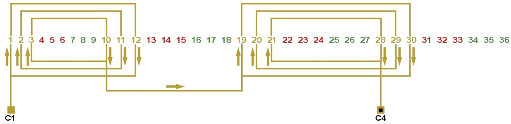
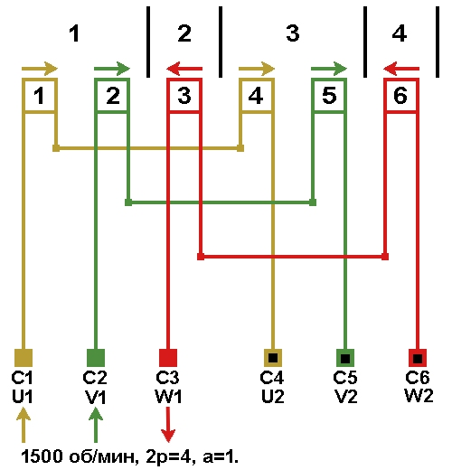

Перейти на главную страницу справочника.
Составление схемы соединений катушек в обмотке электродвигателя.
- Составление схемы соединений катушек в обмотке электродвигателя совершенно одинаковы как для трёхфазного так и для однофазного электродвигателя. Поэтому порядок составление схемы соединений рассмотрим на примере трёхфазного двигателя с количеством пазов Z1=36, 1500 оборотов в минуту 2p=4.
- Для составления схемы соединений нам понадобятся данные предыдущих расчетов, это рисунок №1 и данные после расчета начал фаз, а после расчета начал фаз по пазам получилось: C1 - паз 1, C2 - паз 7, C3 - паз 13.
Рис №1
- Для наглядности воспользуемся схемой укладки этого электродвигателя рисунок №2.
Рис. 2
- Начало фазы А находится в первом пазу и в первой катушке рисунков №2 и №3, рисуем вывод и обозначаем его C1 рисунок №3. На рисунке №1 смотрим направление токов и соединяем катушку №1 фазы А с катушкой №4 фазы А согласно направлению стрелок. Получилось: конец первой катушки соединяется с началом четвертой катушки. Конец четвёртой катушки обозначаем выводом C4 рисунок №3. Далее составляйте схему соединений катушек в фазах В и С с учетом начал фаз.
Рис №3 
{kind=link}
- После составления схемы соединений катушек получилась схема на рисунке №4, количество параллельных ветвей а=1.
Рис. 4 
{kind=link}
- На рисунке №5 показана схема соединений с количеством параллельных ветвей а=2. Обратите внимание, что направление токов по рисунку №1 не изменилось.
Рис. 5
18.12.2011 г.